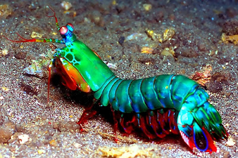
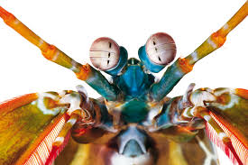
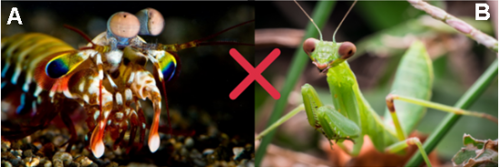
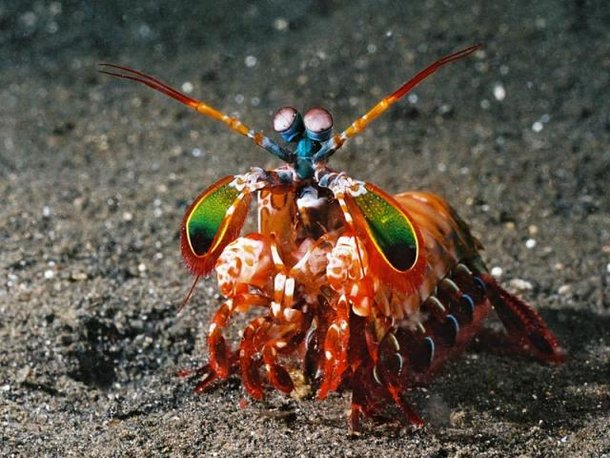

Fatos sobre o Stomatopoda

Os crustáceos estomatópodes (camarões mantis) possuem um sistema visual incrivelmente complexo, composto por olhos compostos que contêm mais tipos de fotorreceptores do que em qualquer outro animal conhecido. O arsenal óptico do olho do camarão mantis inclui capacidade de localização monocular, visão colorida de 12 canais, detecção de polarização linear de 2 canais e, em algumas espécies, a capacidade de detectar e analisar luz polarizada circularmente. Subjacente a este conjunto incomparável de capacidades funcionais está uma diversificação estrutural de uma unidade fotorreceptiva básica comum a todos os olhos compostos, o omatídio. A seguir, as proezas visuais do camarão mantis são descritas no contexto das variações do design e da distribuição de seus omatídios.
Informações Gerais
Odontodactylus scyllarys
| Reino |
Filo |
Classe |
Sub-Classe |
Ordem |
Familia |
| Animalia |
Crustacea |
Malacostraca |
Hoplocarida |
Stomatopoda |
Odotondactylidae |
Olhos

Os olhos são testamentos da criatividade da evolução. Todos eles fazem as mesmas coisas básicas - detectam a luz e a convertem em sinais elétricos - mas de uma variedade incrível de maneiras. Existem olhos simples e compostos, lentes bifocais e rochosas , espelhos e fibras ópticas . E há olhos que são tão estranhos, tão constantemente surpreendentes que, após décadas de pesquisa, os cientistas apenas descobriram como funcionam, quanto mais por que evoluíram dessa forma. Para encontrá-los, você precisa dar um mergulho.
A maioria das pessoas tem três tipos de células de detecção de luz, ou fotorreceptores, que são sensíveis à luz vermelha, verde e azul. Mas o camarão mantis tem de 12 a 16 fotorreceptores diferentes em sua banda média. A maioria das pessoas presume que elas devem ser realmente boas em ver uma ampla gama de cores - uma “ bomba termonuclear de luz e beleza ”, como disse o Oatmeal.
Beleza

Bom, com a primeira curiosidade já conseguimos entender o seu primeiro nome característico: Lagosta Boxeadora, mas e o nome Lagosta louva a deus palhaço como que surgiu?
A ordem estomatópode, a qual a Lagosta Louva a Deus Palhaço está classificada, tem como característica morfológica a segunda pata torácica modificada parecida com a de um louva deus. Além disso, é extremamente colorida, o que a torna bela, única e associada com palhaços.
Tamanho

As lagostas-boxeadoras costumam ser encontradas próximo à costa de mares tropicais e subtropicais e são predadoras letais que se alimentam de caranguejos, camarões, moluscos e peixes. Na verdade, apesar de não serem muito grandes — entre 15 e 30 centímetros —, as tamarutacas são um verdadeiro pesadelo dos oceanos, sendo consideradas como um dos animais mais violentos do planeta.